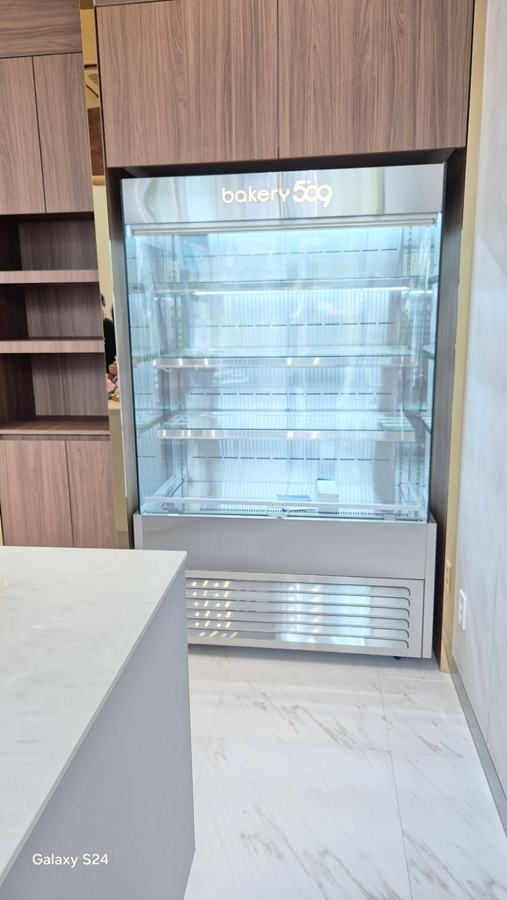
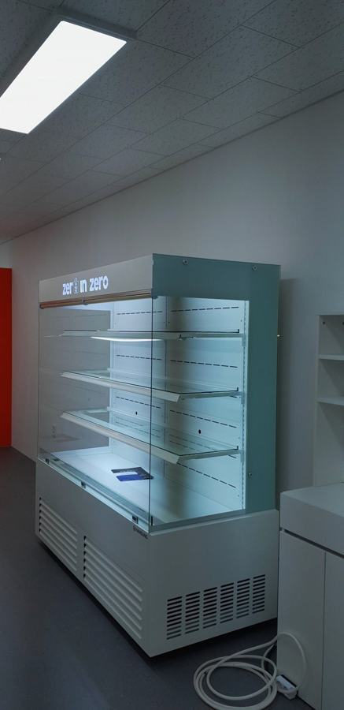
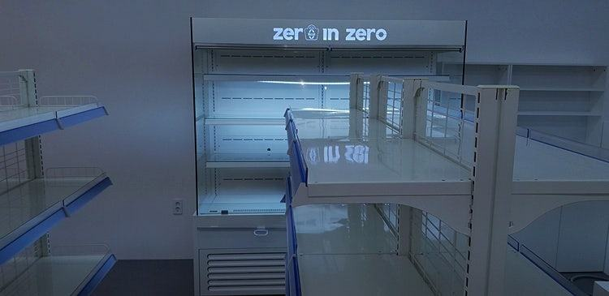

오픈쇼케이스
오픈쇼케이스 배송, 반입 경로부터 재 두셔야 합니다

오픈쇼케이스 배송에서 가장 많이 막히는 곳은 출입문 폭과 꺾이는 복도, 그리고 설치 자리의 배수·전원입니다. 주문 전에 반입 경로를 실측하고, 제작부터 설치까지 한 업체가 맡으면 도착 당일 문제가 크게 줄어듭니다.
안녕하세요, 카페와 마트 매장에 맞춤 쇼케이스를 만들어 온 한성쇼케이스입니다.
오픈쇼케이스를 주문하신 사장님들이 출고 직전에 가장 많이 하시는 전화가 있습니다. "배송 오는 날 매장 문으로 들어가긴 하겠죠?" 막상 그날이 되면 문틀에 걸리거나 계단 모서리에서 돌리지 못해 설치가 미뤄지는 일이 생각보다 자주 생깁니다.
오픈쇼케이스는 앞면이 트여 있고 뒤쪽에 송풍 구조와 기계실이 붙어 있어 눕히거나 기울여 옮기기 까다로운 제품입니다.
그래서 크기를 정할 때 매장 안 자리만이 아니라 들어오는 길까지 함께 봐야 합니다.
오늘은 배송 전에 사장님이 직접 확인하실 것들과, 제작 단계에서 미리 맞춰 두면 좋은 부분을 정리해 드리겠습니다.
1. 반입 경로가 설치 크기를 정합니다
오픈쇼케이스는 진열면이 앞으로 열린 구조라 전면 유리문형보다 깊이가 깊어지는 경우가 많습니다. 매장 안에는 충분히 들어갈 자리라도 출입문 폭이나 엘리베이터 문이 이 깊이보다 좁으면 그대로 들일 수 없습니다.
특히 건물 1층 상가라도 출입문 옆에 고정 유리창이 붙어 있으면 열리는 쪽만 실제 통로가 됩니다. 지하나 2층 매장이라면 계단 폭과 꺾이는 층계참 공간까지 재 두셔야 합니다.
반입이 어려운 구조라면 처음부터 본체를 나눠 들일 수 있게 설계하거나, 깊이를 조금 줄이고 선반 단수로 진열량을 맞추는 방법도 있습니다.
- 출입문의 실제 열리는 폭과 높이를 재 두세요.
- 계단·복도에서 꺾이는 지점의 여유 공간을 확인하세요.
- 엘리베이터를 쓴다면 문 폭과 내부 깊이도 함께 적어 두세요.
2. 도착 전에 설치 자리를 비워 두세요
오픈쇼케이스는 문이 없는 대신 에어커튼으로 찬 공기를 앞면에 붙잡아 두는 방식이라, 설치 위치에 따라 성능 차이가 납니다.
출입문 바로 앞이나 냉난방기 바람이 정면으로 닿는 자리는 냉기가 흩어지기 쉽습니다.
배송 당일 인테리어 공사가 끝나지 않아 바닥에 자재가 쌓여 있으면 기사님이 제자리에 놓지 못하고 임시로 두고 가야 할 수도 있습니다.
바닥 수평과 전용 콘센트, 배수 위치는 배송 날짜를 잡기 전에 마무리해 두시는 편이 좋습니다.
- 전용 콘센트 위치와 용량을 미리 확인하세요.
- 배수가 필요한 구조라면 배수구 위치를 정해 두세요.
- 뒤쪽과 옆쪽 통풍 공간을 비워 두세요.


3. 제작·배송·설치를 한 곳이 맡을 때
유통만 하는 곳에서 구매하면 제작처, 운송처, 설치 기사가 서로 달라 일정이 어긋날 때 누구에게 물어야 할지 애매해집니다.
반대로 직접 만들고 납품까지 하는 업체라면 실측한 치수로 제작하고 같은 팀이 들고 들어가니 배송 지연이나 잘못 설치되는 일이 줄어듭니다.
설치 뒤에도 마찬가지입니다. 오픈쇼케이스는 물기가 많은 곳에 놓이고 콤프레셔를 꾸준히 관리해야 하는 제품이라, 문제가 생기면 만든 쪽에서 바로 A/S를 볼 수 있는지가 중요합니다.
4. 설치 당일 같이 확인할 것
제품이 자리를 잡으면 전원을 넣고 에어커튼 바람이 앞쪽 끝까지 고르게 나오는지, 조명이 모두 켜지는지 사장님 눈으로 직접 보시길 권합니다.
나이트커버가 있는 모델이라면 내리고 올리는 방법도 그 자리에서 익혀 두세요.
선반 높이를 조절할 수 있는 구조라면 처음 진열할 상품을 몇 개 올려 보고 간격을 맞추는 것도 좋습니다.
병음료와 디저트를 함께 놓는 매장은 이때 단 높이를 정해 두면 영업 첫날이 훨씬 수월합니다.
체크리스트
- 출입문 실제 개방 폭과 높이
- 계단·엘리베이터 등 반입 경로
- 전용 콘센트와 배수 위치
- 냉난방기 바람이 닿지 않는 설치 자리
- 설치 당일 에어커튼·조명 작동 확인
현장에서 자주 보는 경우: 기성품 크기가 매장과 맞지 않을 때
오픈형쇼케이스를 들이는 카페나 음식점이 늘면서, 기성품 중에서 매장 인테리어와 진열 상품에 맞는 크기를 고르지 못해 고민하시는 경우를 자주 봅니다.
매장 규모보다 큰 제품을 억지로 넣으면 작업 동선이 막히고 공간도 낭비됩니다.
이럴 때는 설치할 자리에 맞춰 크기와 디자인, 색상을 처음부터 정해 제작하는 쪽이 낫습니다. 제작부터 납품, 설치까지 한 업체가 진행하면 유통 단계가 줄고, 배송 지연이나 잘못된 설치 같은 문제도 생길 여지가 적습니다.





자주 묻는 질문
매장 문이 좁은데 오픈쇼케이스를 들일 수 있을까요?
반입 경로 치수를 먼저 알려 주시면 그에 맞춰 깊이나 구조를 조정해 제작할 수 있는지 검토해 드립니다.
문 폭 하나 때문에 진열량을 포기하지 않도록 선반 단수로 보완하는 방법도 있습니다.
인테리어 공사 중인데 배송 날짜는 언제로 잡는 게 좋을까요?
바닥 마감과 전기·배수 공사가 끝난 뒤로 잡으시는 편이 안전합니다. 자재가 남아 있으면 제자리 설치가 어려워 다시 옮겨야 할 수 있습니다.
지방 매장도 배송과 A/S가 되나요?
한성쇼케이스는 전국 240여 개 A/S 센터를 운영하고 있어 지방 매장도 설치 이후 관리를 받으실 수 있습니다.
정확한 배송 일정은 지역과 제작 일정에 따라 상담 시 안내해 드립니다.
매장 조건에 맞춰 만드는 한성쇼케이스
원하시는 제품 사진과 설치할 공간 사진만 보내 주셔도 매장에 맞는 구성을 추천해 드립니다.
- 전국 240여 개 A/S 전담 센터 운영
- 본사 대량 자재 매입으로 품질 대비 합리적인 가격
- 유럽제·삼성 냉각 콤프레셔 적용
- 국내 최초 쇼케이스 전문 디자이너 상주
매장 폭과 원하는 진열 구성을 알려 주세요. 실측과 견적을 안내해 드립니다.
031-986-2458